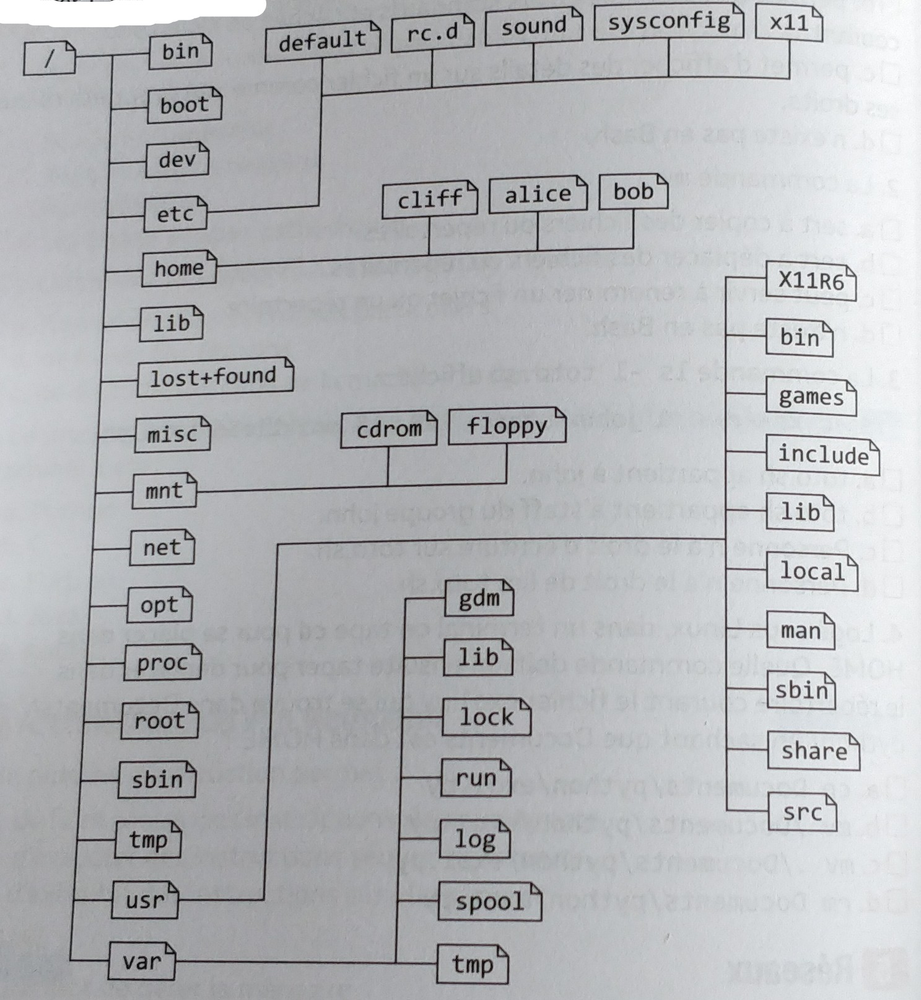
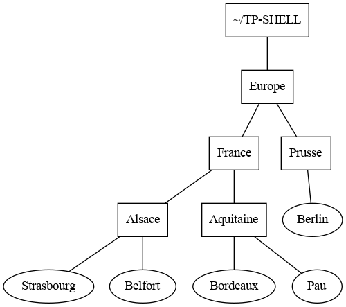
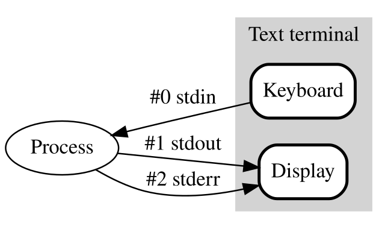

Se tester #
1. BASH #
-
Que fait la commande
ls -al? -
Que fait la commande
mv? -
La commande
ls -l toto.shaffiche :-r-x-r--r-- 1 john staff 128 18 mai 11:56 toto.sha. À qui appartient ce fichier ? b. Qui peut écrire dans le fichier ? c. Qui peut le lire ? d. Qui peut l’exécuter ?
-
Logé sous Linux, dans un terminal on tape
cdpour se placer dans HOME. Quelle commande doit-on ensuite taper pour déplacer dans le répertoire courant le fichierexo1.pyqui se trouve dansDocuments/pythonsachant queDocumentsest dans HOME ?
2. Se déplacer dans le système de fichiers #
Observer l’arborescence suivante :

- Proposer une commande qui permette de se déplacer du répertoire HOME de Alice à celui de Bob : a. en utilisant un chemin relatif ; b. en utilisant un chemin absolu.
- Alice est à la racine
/. Proposer trois commandes qui peuvent lui permettre de se déplacer dans son répertoire d’accueil (HOME). - Bob est dans son HOME. Aidez-le à : a. lister le contenu de son HOME ; b. lister le contenu de son HOME y compris les fichiers et répertoires cachés. c. lister le contenu du répertoire share sans quitter son HOME.
3. Créer une arborescence et se déplacer dedans #
-
Créer dans le repertoire d’accueil l’arborescence ci-dessous dans laquelle A, B, C, D, E, F et G sont des répertoires :
A +-- B | | | +-- D | | | +-- E +-- C | +-- F | +-- G -
Quelle commande Unix permet de créer des fichiers vides ? Créer deux fichiers vides appelés “un” et “deux” dans votre répertoire d’accueil.
-
Quelle commande permet de copier des fichiers ou répertoires ? Colier le fichier “un” dans le répertoire “A” en lui donnant le nom “trois”.
-
Comment réaliser la copie précédente en utilisant un chemin relatif si vous êtes ; a. dans le répertoire A ? b dans le répertoire B ?
-
Si votre nom d’utilisateur est
alice, comment réaliser cette copie en utilisant un chemin absolu ? -
Comment renommer le fichier “trois” en “quatre” ?
4. Mettre en majuscule #
-
Expliquer ce que fait la commande suivante (respecter les espaces) :
echo 'bonjour' | tr [a-z] [A-Z]Remarque : Consultez la page de manuel (
man tr) correspondante. -
Écrire un script à un argument qui met en majuscule l’unique argument fourni.
5. Tester l’existence d’un fichier et en afficher le contenu #
-
Quelle option de la commande
echofaut-il utiliser pour rester sur la même ligne ?
manuel d’echo -
Comment faut-il faire pour afficher un message sur plusieurs lignes avec cette même commande ?
-
Rappeler la commande permettant de lire au clavier et de stocker le résultat dans une variable bash.
-
Comment affiche-t-on le contenu d’un fichier sur le terminal ?
-
Pour tester l’existence d’un fichier, en BASH on utilise le test suivant :
fic='monfic' if [ -f $fic ] then echo "Le fichier $fic existe" else echo "Le fichier $fic n\'existe pas !" fiÉcrire un script qui demande à l’utilisateur de saisir un nom de fichier, teste si ce fichier existe, puis en affiche son contenu dans le terminal.
6. Lire les droits d’un fichier #
Pour chacun des fichiers suivants, répondre aux deux questions :
-rwx------ 1 alice etu 43M 14 jui 11:55 fichier1
-rw-r--r-- 1 roza staff 54K 14 jui 11:56 fichier2
-rwx--x--x 1 bob admin 3M 14 jui 11:57 fichier3
-r-xr----- 1 john john 1B 14 jui 11:55 fichier4
- Donner le nom de l’utilisateur auquel il appartient, les droits qu’il a sur le fichier, ceux du groupe et des autres
- Quel est l’équivalent octal du droit correspondant ?
7. Rendre exécutable un fichier #
-
Rappeler la commande qui permet de rendre exécutable un fichier pour tous les utilisateurs?
-
Rappeler la manière de tester l’existence d’un fichier.
-
Utiliser ces connaissances pour construire un script
rendExecutableà un argument qui teste si cet argument désigne un fichier existant, et le rend exécutable si besoin.Pour tester si un fichier est exécutable, on peut utiliser le test similaire ;
if [ -x $fic ] then echo "Le fichier $fic est exécutable" else echo "Le fichier $fic n'est pas exécutable !" fi
8. Rendre exécutable plusieurs fichiers #
- Rappeler comment on accède à la liste des arguments d’un script.
- Comment parcourir cette liste dans un script ?
- Utiliser ce parcours pour proposer un script
ajouteDroits.shqui attend en entrée une liste de fichiers et les rend tous exécutables (si besoin).
9. Arborescence #
Sans toucher le clavier, décrire l’effet de chacune des commandes suivantes, en supposant qu’elles sont enchaînées dans l’ordre :
user:~$ cd ~
user:~$ mkdir sandbox
user:~$ cd sandbox/
user:~/sandbox$ mkdir nsi
user:~/sandbox$ cd nsi
user:~/sandbox/nsi$ touch TP_shell
user:~/sandbox/nsi$ chmod ugo=rw-rw-rw- TP_shell
user:~/sandbox/nsi$ cd ..
user:~/sandbox$ mkdir maths
user:~/sandbox$ mkdir maths/premiere
user:~/sandbox$ touch maths/TP_proba
user:~/sandbox$ ls maths
10. Arborescence, bis #
exercice du manuel de première NSI chez Ellipses
Sans toucher le clavier dessiner l’arborescence du répertoire ~/test après l’exécution dans l’ordre de la séquence de commandes ci-dessous :
user:~$ mkdir sandbox
user:~$ cd sandbox/
user:~/sandbox$ mkdir a b c d
user:~/sandbox$ touch a/t.txt d/foo.txt
user:~/sandbox$ cd c
user:~/sandbox/c$ mkdir ../b/e f g
user:~/sandbox/c$ cd ..
user:~/sandbox$
user:~/sandbox$ cp */*.txt c/g
user:~/sandbox$ rm -rf d
11. QCM de type E3C 2 #
-
Dans un système Linux, on dispose d’un répertoire racine contenant deux répertoires
documentsetsauvegardes. On se trouve dans le répertoire documents où figure un fichierNSI.txt.Quelle commande permet de créer une copie nommée
NSI2.txtde ce fichier dans le répertoire sauvegardes ?Réponses
A)
cp NSI.txt NSI2.txtB)
cp NSI.txt sauvegardes/NSI2.txtC)
cp NSI.txt ../NSI2.txtD)
cp NSI.txt ../sauvegardes/NSI2.txt -
À partir du dossier
~/Doc/QCM, quelle commande permet de rejoindre le dossier~/Hack/Reponses?Réponses
A)
cd Hack/ReponsesB)
cd /Hack/ReponsesC)
cd ~/Hack/ReponsesD)
cd ../../Hack/Reponses -
Sous Linux, les droits d’accès à un fichier dont le propriétaire est Joseph sont les suivants :
-rwxr-xr--Laquelle des affirmations suivantes est fausse ?
Réponses
A) Joseph a l’autorisation de lire ce fichier
B) les membres du groupe de Joseph ont l’autorisation de lire ce fichier
C) tous les utilisateurs ont l’autorisation de lire ce fichier
D) les membres du groupe de Joseph ont l’autorisation de modifier ce fichier
-
Dans la console Linux, quelle commande faut-il exécuter pour effacer le fichier
test0.csv?Réponses
A)
rm test0.csvB)
cp test0.csvC)
ls test0.csvD)
mv test0.csv -
Dans un terminal, on exécute la suite de commandes système suivante :
cd ~ cd seances/tp mv exercice.txt ./../../exercice.txtOù se trouve finalement placé le fichier exercice.txt ?
Réponses
A) dans le répertoire
~/seance/tpB) dans le répertoire
~/seanceC) dans le répertoire
~D) dans le répertoire
/home -
Pour renommer un fichier
text1.txtentext1.olddans un même répertoire, quelle commande faut-il utiliser ?Réponses
A) mv text1.txt ../text1.old
B) mv text1.txt text1.old
C) cp text1.txt text1.old
D) lns text1.txt text1.old
-
Sous Unix, que fait la commande suivante ?
ls --a /home/pi >> toto.txtRéponses
A) elle liste uniquement les répertoires cachés du répertoire /home/pi
B) elle liste tous les fichiers du répertoire /home/pi et enregistre le résultat dans un fichier toto.txt
C) elle liste tous les fichiers des répertoires de /home/pi et de toto.txt
D) elle liste tous les fichiers du répertoire courant et enregistre le résultat dans un fichier /home/pi/toto.txt
-
Par quelle ligne de commande peut-on créer, sous le système d’exploitation Linux, trois répertoires nommés : JAVA, PYTHON et PHP ?
Réponses
A)
mkdir JAVA, PYTHON, PHPB)
mk -dir JAVA PYTHON PHPC)
mkdir JAVA PYTHON PHPD)
mk dir JAVA PYTHON PHP -
À partir du répertoire
~/Perso/Docquelle commande permet de rejoindre le répertoire~/Public?Réponses
A)
cd ./PublicB)
cd ../PublicC)
cd ././PublicD)
cd ../../Public -
Dans la console Linux, quelle commande faut-il exécuter pour obtenir la documentation sur la commande
pwd?Réponses
A) man pwd
B) cd pwd
C) mkdir pwd
11. Exercice du livre Parlez-vous Shell ? de Thomas Hugel chez Ellipses #

On se place dans le répertoire personnel de l’utilisateur représenté par le raccourci ~.
- Dans son répertoire personnel, créer le répertoire
TP-SHELLpuis entrer dans ce répertoire. - Créer le répertoire
Europeet changer de répertoire courant pourEurope. - Écrire une suite de commandes qui permet de construire l’arborescence ci-dessus sans quitter le répertoire
Europe. Les fichiers apparaissant avec des rectangles sont des répertoires et les autres sont des fichiers. - Créer dans
~une copie de tout le répertoireEuropeavec ses sous-répertoires et nommer cette copieVieille-Europe. Les modifications qui suivent devront être faites dansEurope. - Appliquons le traité de Francfort de 1871. Se placer dans le répertoire
Prusseet déplacerBelfortdansFrancepuis déplacerAlsacedansPrusse. Revenir dansEuropeet renommerPrusseenAllemagne. - Depuis
Europe, afficher le contenu deBordeauxpuis détruire ce fichier. - Appliquons le traité de Versailles de 1919. Depuis
France, ramenerAlsaceenFrancepuis détruireVieille-Europe.
Exercices plus avancés #
12. Flux d’entrée / sortie et redirections, filtres et pipeline #
-
Par défaut, chaque programme (dont les commandes shell) exécuté dans un shell UNIX admet trois canaux, ou flux, de communication avec l’extérieur :
- Un canal d’entrée nommé entrée standard (stdin en anglais) qui par défaut est le texte saisi au clavier dans le terminal.
- Un canal de sortie nommé sortie standard (stdout en anglais) qui par défaut est l’écran du terminal.
- Un canal d’erreur nommé erreur standard (stderror en anglais) qui par défaut est l’écran du terminal.
-
On peut modifier l’entrée ou la sortie standard d’une comande pour lire ou écrire sur d’autres canaux que ceux par défaut (fichiers ou flux réseaux au lieu de clavier / écran ). Pour rediriger un flux vers l’entrée ou la sortie standard d’une commande on utilise des opérateurs de redirection :
| Opérateur | Redirection |
|---|---|
> |
sortie standard |
>> |
sortie standard en ajout à la fin |
< |
entrée standard |
-
Par exemple, si on veut écrire le contenu du répertoire courant dans un fichier
contenu.txt, on redirige la sortie standard delsvers un fichiercontenu.txtau lieu de l’écran du terminal :user:~$ ls > contenu.txt -
Et si on veut compter le nombre de mots dans un texte, on redirige son entrée standard vers le contenu de
texte.txtau lieu du clavier :user:~$ wc -m < texte.txt -
On peut enchaîner les commandes en pipeline : la sortie standard d’une commande est raccordée à l’entrée standard d’une commande suivante à l’aide d’un pip symbolisé par le caractère
|:commande_debut | commande_fin -
Si on veut intercaler une commande entre les deux, elle doit envoyer son entrée standard sur sa sortie standard : de telles commandes qui servent de traitements intermédiaires entre le début et la fin d’un pipeline sont appelées filtres. On peut ainsi réaliser en un une ligne de commande des traitements complexes.
commande_debut | filtre1 | filtre2 | ... | commande_fin -
Le tableau ci-dessous donne quelques exemples de filtres, d’autres options sont disponibles pour chaque commande.
Commande Action catcopie son entrée standard sur sa sortie standard sans modification sorttrie les lignes de son entrée standard par ordre alphabétique sort -rtrie les lignes de son entrée standard par ordre alphabétique inverse sort -ntrie les lignes de son entrée standard par ordre numérique cut -d : -f 5sélectionne le 5 eme champ de chaque ligne de son entrée standard découpée selon le délimiteur : wc -lcompte les lignes de son entrée standard wc -wcompte les mots de son entrée standard wc -mcompte les caractères de son entrée standard uniqsupprime les lignes considérées comme des doublons head -n5affiche les cinq premières lignes de son entrée standard head -n-5affiche tout sauf les cinq dernières lignes de son entrée standard tail -n5affiche les cinq dernières lignes de son entrée standard tail -n+5affiche tout sauf les cinq premières lignes de son entrée standard

13. Exercice du manuel de première NSI de Thibault Balabonski chez Ellipses #
Le fichier /etc/passwd contient la liste des utilisateurs locaux de la machine.
Pour chaque question, on recherchera éventuellement dans le manuel avec la commande man command les options pertinentes des commandes proposées.
- Afficher les 5 premières lignes du fichier
/etc/passwd. - Afficher la page du manuel de la commande
tacpuis utiliser cette commande pour afficher/etc/passwdà l’envers. - Trier le fichier
/etc/passwdavec la commandesort. Quel ordre est utilisé ? - Les champs de chaque ligne de
/etc/passwdsont séparées par le caractère:. Trier le fichier selon le troisième champ. Quel ordre est utilisé ? - Trier
/etc/passwdselon le troisième champ avec l’ordre numérique.
14. exercice #
-
Ouvrir un terminal et choisir comme répertoire courant
~/TP-SHELL. -
Créer un un répertoire
carnetpuis entrer dans ce répertoire. -
Consulter l’aide de la commande
wgetavecwget --helpouman wgetpuis télécharger le fichier d’URL : https://gitlab.com/frederic-junier/nsi-public/-/raw/master/Premiere/Systeme/TP2/contacts-1000.csv -
Afficher les 3 premières lignes de
contacts-1000.csv, puis ses 3 dernières lignes puis son nombre de lignes. Chaque ligne contient un nom de contact et une adresse mail séparés par le caractère,. -
Écrire une commande qui affiche les 10 premières lignes du contenu de
contacts-1000.csvclassé par ordre alphabétique croissant. -
Écrire une commande qui trie
contacts-1000.csvpar ordre alphabétique croissant puis recopie ce contenu dans le fichiercontacts-1000-alpha.csv. -
Écrire une commande qui filtre les lignes de
contacts-1000.csven sélectionnant uniquement le champ nom puis qui classe ces noms par ordre alphabétique croissant. -
Compléter la commande précédente pour qu’elle supprime les doublons et affiche devant chaque nom le nombre de doublons, c’est-à-dire d’adresses mails du contact. On consultera la page de manuel de la commande
uniqpour sélectionner la bonne option. -
Modifier la commande précédente pour que les contacts soient classés par nombre décroissant d’adresses mails et que le tout soit redirigé vers un fichier
top-mails.txt.
15. Recherches #
Le shell BASH fournit de nombreuses commandes pour rechercher des informations dans le système de fichiers.
-
Pour une recherche sur les fichiers, on peut utiliser la commande
findqui permet d’effectuer une recherche par nom parmi de nombreuses options :Commande Action find -name photo.pngrecherche les fichiers nommés photo.png dans le répertoire courant et tous ses sous-répertoires find -iname photo.pngidem mais insensible à la casse find -name photo.png ~/sandboxrecherche les fichiers nommés photo.png dans le répertoire ~/sandbox et tous ses sous-répertoires find -name '\*.png' ~/sandboxrecherche les fichiers dont le nom se termine par .pngdans le répertoire ~/sandbox et tous ses sous-répertoires -
Par exemple, si on veut rechercher le fichier ‘ducotedechezswann.txt’ dans son répertoire personnel :
user:~$ find -name 'ducotedechezswann.txt' ./Git/Gitlab/frederic-junier/Premiere-NSI/ducotedechezswann.txt ./NSI/TP/ressources/ducotedechezswann.txt -
Pour une recherche sur un contenu de fichier, on peut utiliser la commande
grepqui permet d’effectuer une recherche d’un fragment de texte dans les fichiers donnés en argument. Par défautgrepaffiche chaque ligne de fichier où le fragment apparaît.Commande Action grep 'fragment texte' fichierrecherche les occurences de ‘fragment texte’ dans fichier grep -c 'fragment texte' fichieraffiche juste le nombre d’occurences de ‘fragment texte’ dans fichier grep -r 'fragment texte' reprecherche les occurences de ‘fragment texte’ dans le répertoire rep et tous ses sous-répertoires grep -r -l -i 'fragment texte' repidem mais n’affiche que les noms de fichiers et insensible à la casse -
Par exemple si on veut compter le nombre d’occurences de ‘swann’ dans le texte ‘unamourdeswann.txt’ :
user:~$ grep -i -c 'swann' ducotedechezswann.txt 685
16. find #
Ouvrir un terminal avec la page de manuel de la commande find obtenue avec man find.
Ouvrir un autre terminal pour traiter les questions suivantes.
- Écrire une commande qui affiche tous les fichiers d’extension
.pycontenus dans son répertoire personnel ou ses sous répertoires. - Compléter la commande précédente pour afficher le nombre des fichiers trouvés.
- Compter de même le nombre de fichiers d’extension
.pydans le répertoire/usr/share. - Écrire une commande qui compte le nombre total de répertoires contenus dans son répertoire personnel
~et tous ses sous-répertoires. - Écrire une commande qui compte le nombre de fichiers qui ne sont pas des répertoires et qui ont été créés dans son répertoire personnel et tous ses sous-répertoires dans les dix dernières minutes.
17. Gutenberg #
Le projet Gutenberg met à disposition des utilisateurs des textes du domaine public en format numérique (txt, epub …)
sous licence libre (voir The Gutenberg License).
Le texte brut du “Tour du monde en 80 jours” écrit par Jules Verne est disponible à partir de l’URL http://www.gutenberg.org/ebooks/800.txt.utf-8.
-
Ouvrir un terminal shell et choisir comme répertoire courant
~/TP-SHELL. -
Créer un un répertoire
Phileaspuis entrer dans ce répertoire. -
Consulter l’aide de la commande
wgetavecwget --helpouman wgetpuis télécharger le fichier contenant le texte du “Tour du monde en 80 jours” au formattxt.user:~/TP-SHELL/Phileas$ ls 800.txt.utf-8 -
Renommer le fichier en
tour-du-monde-80-jours.txt.user:~/TP-SHELL/Phileas$ ls tour-du-monde-80-jours.txt -
Afficher le nombre de lignes, le nombre de mots, le nombre de caractères et le nombre d’octets de
tour-du-monde-80-jours.txtavec des options bien choisies de la commandewc. Comment peut-on expliquer que le nombre de caractères est inférieur au nombre d’octets ? Vérifier l’encodage du fichier avec la commandefile tour-du-monde-80-jours.txt. -
Les commandes
duetzippermettent respectivement d’afficher la taille d’un fichier et de compresser un fichier. Consulter leurs pages de manuel avecman du | lessetman zip | less. La commandelessest un pager qui permet d’afficher une page à la fois dans le terminal.- Afficher la taille du fichier en kilo-octets avec la commande
du -h tour-du-monde-80-jours.txt. - Compresser la fichier avec la commande
zip. Quel est le taux de compression ? - Avec la commande
head, afficher les dix premières lignes des fichierstour-du-monde-80-jours.txtettour-du-monde-80-jours.zip. Que peut-on remarquer ?
- Afficher la taille du fichier en kilo-octets avec la commande
-
Consulter la page de manuel de la commande
tacavecman | less tac. En une seule commande, créer un fichiertour-du-monde-80-jours-inverse.txtoù toutes les lignes du fichier initial sont recopiées à l’envers. -
Dans
tour-du-monde-80-jours.txt, avec la commandegrepet des options bien choisies :- Compter le nombre d’occurences du mot
phileas. On doit trouver 330. - Afficher le numéro de ligne du fragment de texte “*** START OF”. Vérifier avec un éditeur de textes.
- Afficher le numéro de ligne du fragment de texte “*** END OF”. Vérifier avec un éditeur de textes.
- En une seule commande, créer un fichier texte
tour-du-monde-80-jours-brut.txtqui contient toutes les lignes comprises entre celles commençant par*** START OFet*** END OF, les deux bornes exclues.
- Compter le nombre d’occurences du mot